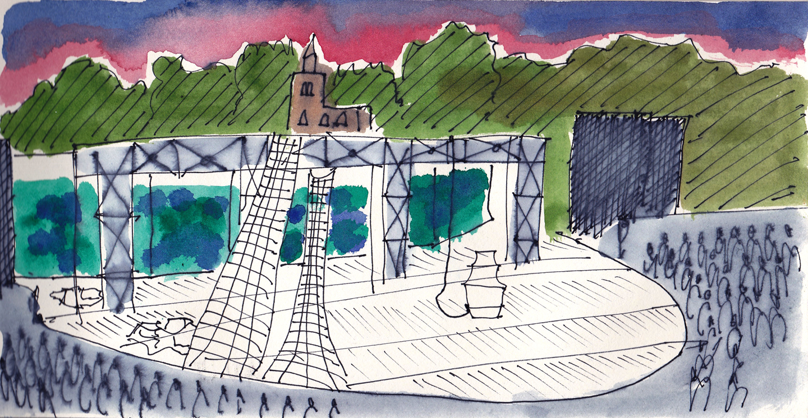
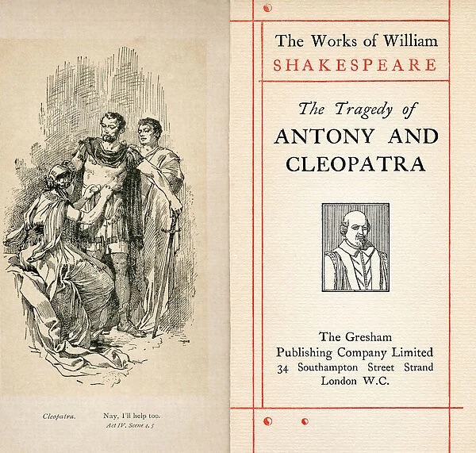
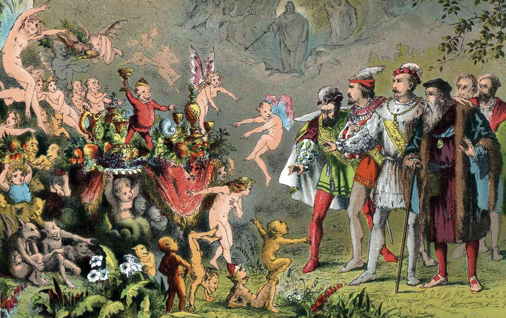
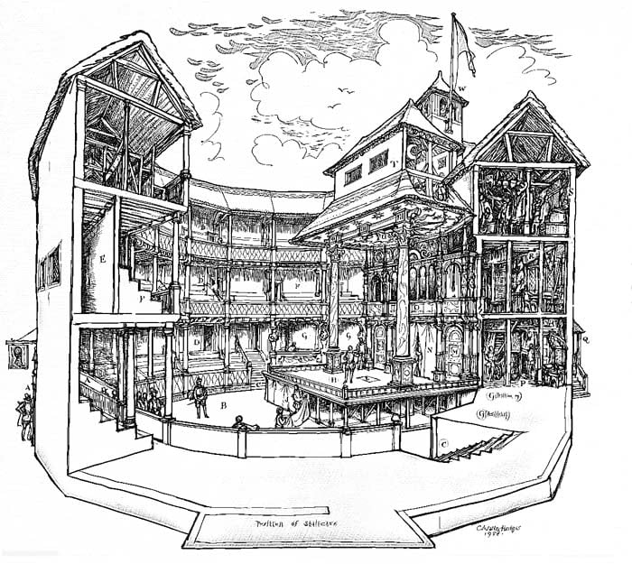

'age cannot wither her, nor custom stale her infinite variety'
(anthony and cleopatra; act II, scene 2)
i fear i'm beginning to sound a bit old-fashioned.
'nothing does it for me like a honest-to-goodness piece of paper...when i was your age, i used to walk back and forth from the papery in the snow/sleet/hail/torrential rain just to catch a glimpse of some sweet...sweet BFK rives...to just touch a crisp copy of hamlet...real literature...'
i know. and i apologize for my tone, reader. i promise, i'm not nearly as senile as my preferences suggest.
(though i did feel a backache coming on the other night...)
'that is the question'
(hamlet; act III, scene 1)
the thing about books, it seems, is that they are a dying art. even i, the worshipper of words and sligner of solliquies in favor of print media, have fallen victim to this mindset. i would be remiss to say that there isn't a degree of truth to it all. books are, as we've established, among the oldest and simpliest means of storytelling available. symbols, that everyone (literate) can understand, in a package (a book) that everyone (with hands) can hold. fairly non-exclusionary, fairly accessible, undoubedtly rhudimentary.
the novel is tried-and-true. the greats have beaten us all to the good punches: right-hook-storytelling of friends, romans, countrymen, vengeful sons, and two households (both like in dignity.) i say the greats, but i mean the great, of course.
read it out loud, it's more fun that way.
heoric couplet and all...nice.
'what's in a name?'
(romeo and juliet; act II, scene 2)
everyone knows willy.
as much fun as i had composing a sonnet to introduce him, he's a man that needs no introduction. nearly every student i've met has played juliet, bottom, or hamlet in their english classroom– some going so far as to take king lear/henry/richard/john to stage. shakespeare's characters are electric: the engerized core at every one of our physical/emotional beings. he captures the plights of love and loss in ways unmatched by contemporary scholars. and though there is discourse over whether or not shakespeare is all he's cracked up to be– or whether he wrote his pieces at all– i don't concern myself with either.
the truth of the matter is, reader, i see the parallels between shakespeare and i. most definetly not in our writing abilities, but in the center of our passions. let me explain.
'my love to thee is sound, sans crack or flaw'
(love's labour's lost; act V, scene 2)
the objection i hear from those earlier students (spare the ones who went on to be kings) about shakespeare is that he's just too dated. there is valor to his world, yes, but it's over 400 years old at this point, and the vernacular has changed. it's no longer accessible-classroom-reading.
there are many voices in the shakespeare world claiming that he was (at times) no better understood then than he is now.
he was never accessible-classroom-reading. he was never reading, at all. shakespeare's works are sonic. their success is fundamentally tied to existing within that space.
print media is fundamentally similar: it flourishes when held– when it can be touched, sniffed, and tasted. (not tasted, but you catch my drift.) digital media follows the same principle: it is most effective when it embraces it's digital-ness.
ie: when it operates on it's own principles– defying the laws of the page.





what i mean to say is that mediums matter. it is easy to discredit that which is not existing in it's corresponding medium: longform essays on a screen, interactive sequences on a page, shakespeare in a book.
every text has it's context, and the interactions between the two are half the beauty of the piece of media: be it sonic, physical, or digital. i am partial to print, of course, but the intention of all of this is not to convince you to side with me, reader. rather, it's to encourage you to embrace it as it is. play to it's strengths. acknowledge that print may not be the 'medium of the future,' but that doesn't condemn it to the past. it's strengths as a tangible vessel persist past percieved innovation: and if we as creative audiences maintain space for alternative presentations, we can observe and appreciate altnerative experiences.